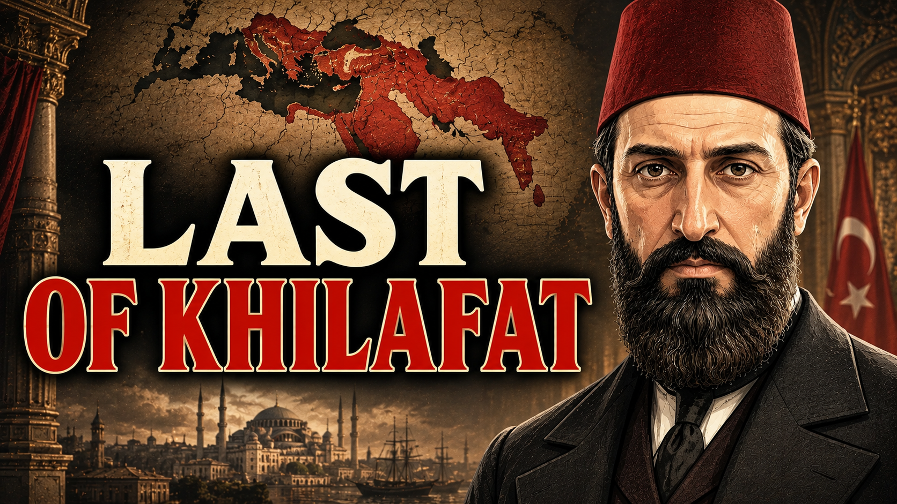
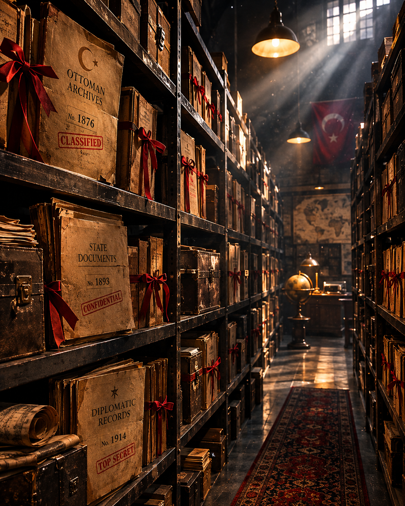
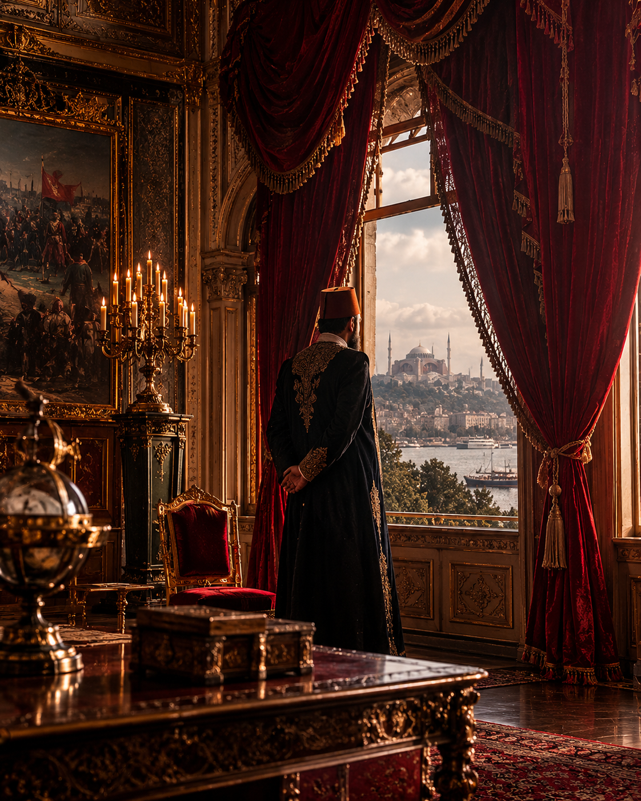
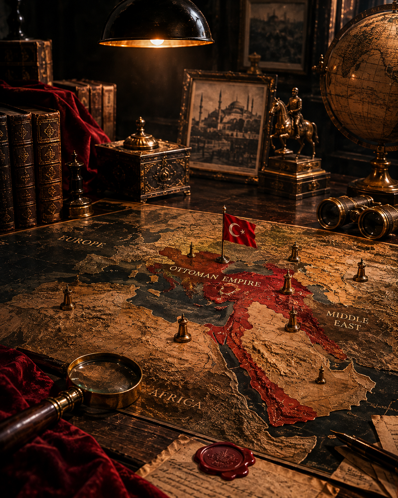
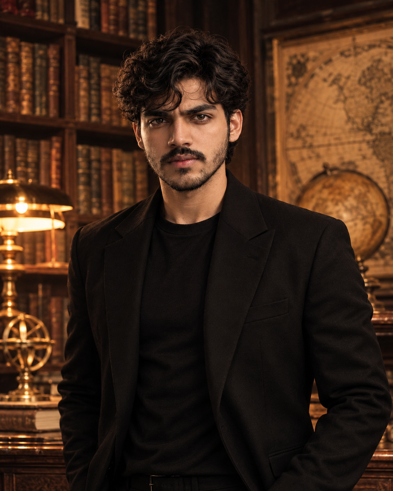

Bismillahir Rahmanir Raheem
In the name of Allah, the Most Gracious, the Most Merciful
Where Forgotten Empires Speak.
CRAFTED FOR CURIOUS MINDS, NOT TEXTBOOKS — UNCOVERING THE BURIED TRUTHS OF HISTORY.
Featured Documentary

Last of Khilafat | Sultan Abdul Hamid II Aur Muslim Unity
What was the true significance of the Caliphate during the era of Sultan Abdul Hamid II? Was Pan-Islamism merely a political strategy to save the Ottoman Empire, or was it a religious and diplomatic vision for Muslim unity?
Watch Full Documentary →Our Core Pillars
Every documentary is crafted with archival precision, visual depth, and fearless geopolitical storytelling.

Deep Historical Archives
Built on authentic primary sources, declassified records, and deep historical investigation.

Cinematic Storytelling
Bringing 19th-century Istanbul, fallen empires, and global turning points to life in 4K.

Beyond The Textbooks
Investigating the real motives, diplomatic strategies, and untold chapters behind world events.

What makes Sadique Docs different?
I’m Sadique Saif — the creator behind Sadique Docs.
Passionate about history, mysteries, and geopolitical turning points, I explore the buried past through intensive research, visual reconstruction, and a signature cinematic perspective.
"Every story has a past. Every past has a story."Read Full Story →